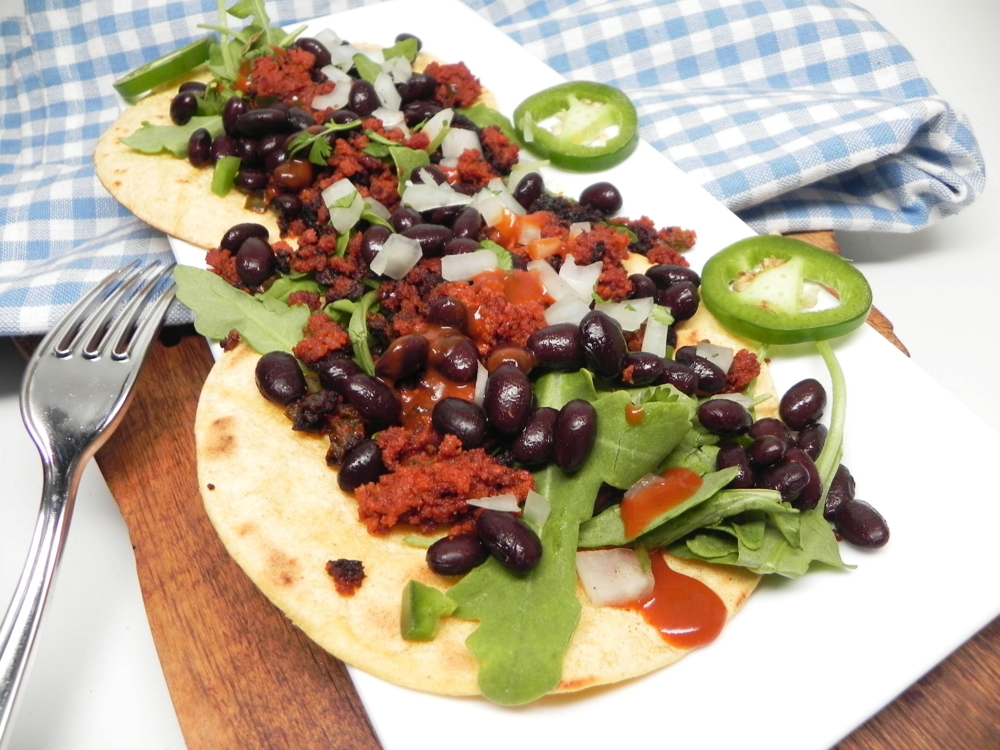

Taco Recipe

Description
Veggie lovers be aware we have a taco filling just for you!
No longer will you have to miss out on taco tuesday with this satisfying Soy Chorizo filling.
And don't worry meat-eaters this recipe contains filling beans and tastes just like the real thing.
Ingredients
- 2 tbsp vegetable oil
- 8 oz soy chorizo (Cut in pieces)
- 2 green bell peppers (Cut in pieces)
- 1 red bell pepper (Cut in pieces)
- 1 medium onion (Cut in pieces)
- 1/2 cup of water
- 1 tbsp taco seasoning
- 1 tsp hot sauce (Optional)
- 1 tsp paprika (Optional)
Steps
- Heat oil in skillet over medium-high heat.
- Add chorizo and cook until slightly browned, about 5 minutes.
- Add bell peppers and onion and cook until slightly soft but still firm, about 5 minutes more.
- Add water and taco seasoning. Stir until thoroughly mixed and water is bubbly.
- Reduce heat to medsium and let water reduce, 3 to 4 minute. Add hot sauce and paprika